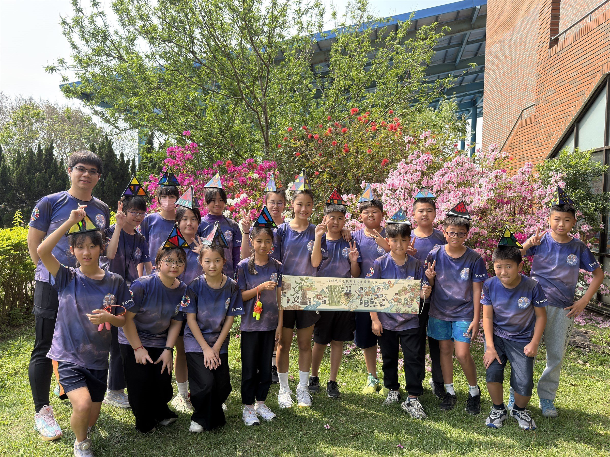
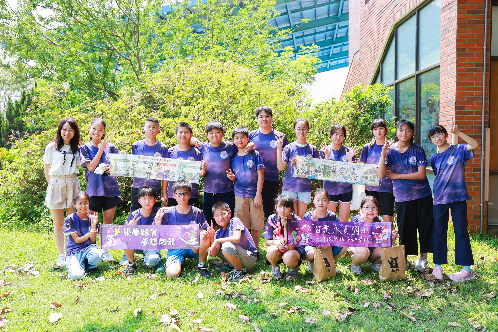
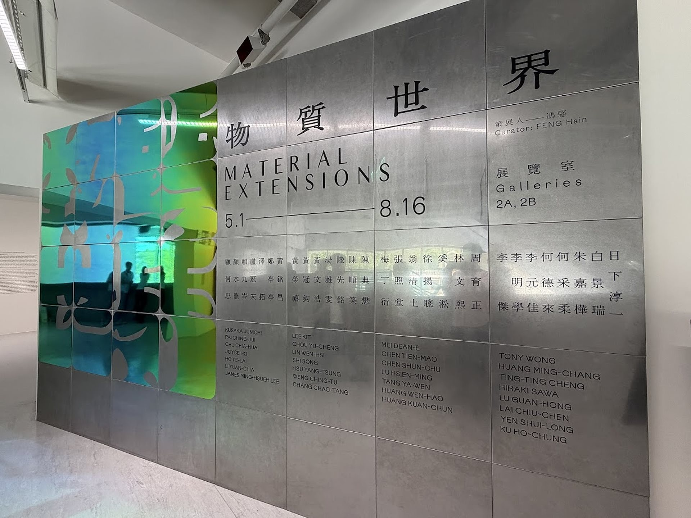
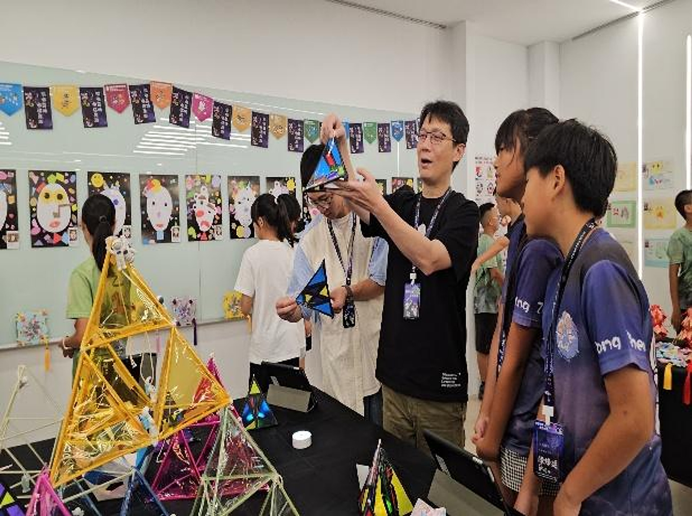
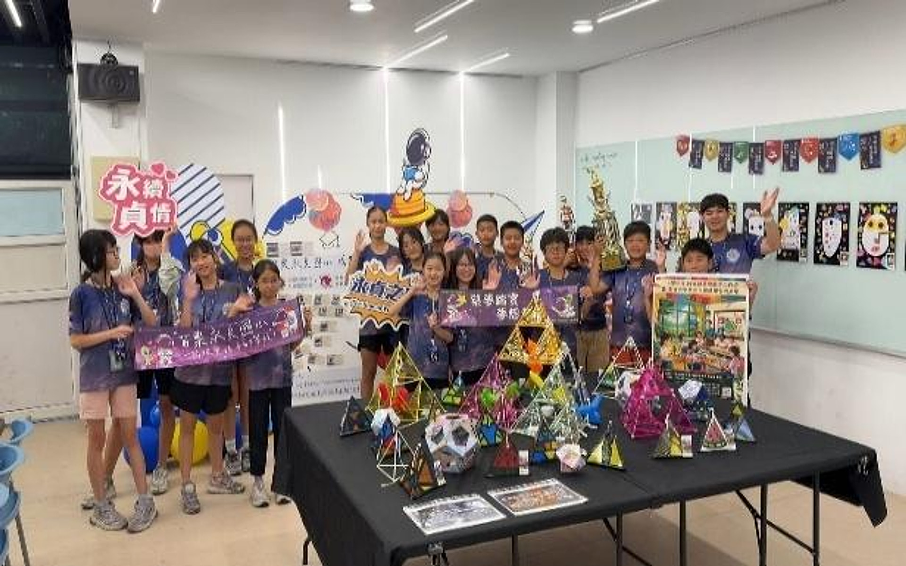
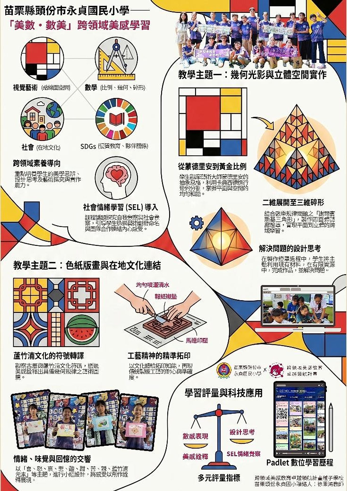

🏆 🏅 教育部核定 115學年度【標竿學校】 · 114學年度【種子學校】
跨領域美感 × 數學幾何 × 藝術實踐
跨領域美感教育卓越領航
教育部跨領域美感教育卓越領航計畫：標竿學校推動與【美數．數美】創課方案
✨ 2026 跨領域美感成果展網站已完整介接
永貞國小六年甲班 × 徐秉鴻老師
永貞國小六年甲班 2026跨領域美感教學成果網站
完整收錄 327+ 件學生原創藝術品（蒙德里安小夜燈、星際自畫像、老屋顏壓花玻璃）、217+ 課堂紀實照片、63+ 部專題影音、18 步實踐歷程與 3 大美感互動實驗室！
📖 專題設計緣起與核心精神
永貞國小榮獲教育部核定為『跨領域美感教育卓越領航計畫』標竿學校與種子學校。由徐秉鴻老師擔任核心規劃與說課代表，完整上架 114-1 及 114-2 兩份創課方案 4.2 完整教案，並全面以學生課堂探究實作、動手剪裁測繪、正多面體立體折疊、分形骨架綁紮、操場試飛、古厝走讀拓印、學生親自導覽說課及專家大師共學之【學生學習影像】作呈現！
🌍 核心素養與聯合國永續指標 (SDGs) 對應
美感素養 1
美學思辨與覺察省思
觀察自然造物中的柱體、錐體與比例對稱，建立理性與感性兼備的美學眼光。
美感素養 4
設計思考與創意發想
運用立體幾何與黃金分割率，設計兼具實用性與幾何張力的立體造形藝術與幾何小夜燈。
美感素養 7
藝術探究與生活實踐
將幾何美學應用於畢業成果展覽佈置、在地老屋顏田調採集與校園公共藝術角落。
🧩 核心模組與教學實踐架構
單元一：自然與建築中的幾何密碼
立體形體與空間透視解析
帶領學童走出課室觀察校園建築窗櫺、紅磚拼貼與植物葉序中的幾何規則。透過量測與繪圖，理解圓柱、角錐、正多面體的結構力學與空間美感。
單元二：幾何分割與藝術拼貼 (Geometric Collage)
平面構成與色彩節奏
引導學生運用點、線、面的幾何分割原理，結合冷暖色調與對比色彩，創作富涵現代抽象表現主義風格的幾何視覺藝術作品。
單元三：立體造形與生活工藝 (3D Form Design)
立體結構實作與幾何小夜燈創客
結合卡紙、輕木、冰棒棍與環保媒材，學生動手構築多面體雕塑與幾何小夜燈等實用生活工藝，體驗從平面展開圖到三維立體成形的數藝奧妙。
單元四：畢業成果策展與桃竹苗跨校發表
美感策展與公眾說課表達
學生自主分組策劃畢業美感成果展；徐秉鴻老師代表永貞國小於桃竹苗區合作學校成果分享會進行專題說課，展現苗栗在地美感教育深耕量能。
📸 教學現場紀實與成果照片（點擊放大檢視）
🔍 六年甲班全體師生於校園草地操作「謝爾賓斯基正四面體」碎形幾何夜燈作品與跨領域美感教育多元學習歷程發表合影（草地操作作品與畢業成果展）

🔍 六年甲班全體師生於校園綠茵草地展開跨領域美感教育之多元學習歷程成果布條大合影（草地成果發表）

🔍 課堂小組合作學習與跨域探究實作討論（小組合作）

🔍 學生上台口語發表與師生全班互動回饋（師生互動）

🔍 學生口語解說自畫像創作理念與同儕互評（生生互動）

🔍 成果展學生導覽：學生親自向全校師生家長進行美感說課解說

🔍 專家深度點評：羅仕龍教授現場聆聽學生導覽解說與深度互動

🔍 成果展圓滿成功：六年甲班全體師生探究學習總結成果合影
📑 相關獲獎證明與教案原件
📑 永貞國小 114 學年度第 1 學期 (114-1) 跨領域美感創課方案 4.2 完整教案（美數．數美：幾何與比例探索）
📑 永貞國小 114 學年度第 2 學期 (114-2) 跨領域美感創課方案 4.2 完整教案（美數．數美：幾何光影、立體空間與在地版畫）
📑 教育部 115 學年度跨領域美感教育卓越領航計畫推動【標竿學校】核定公函證明
📑 教育部 114 學年度跨領域美感教育卓越領航計畫推動【種子學校】核定公函證明
📑 跨領域美感教育卓越領航計畫｜114學年度桃竹苗區合作學校成果分享會 發表證明